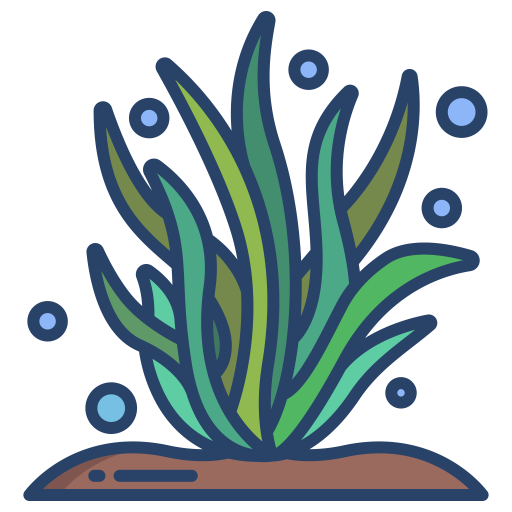

Products of the Ocean
Most of the living things in the ocean are in a very small portion near the surface. Nearly all marine life depends directly or indirectly on microscopic algae found only at the ocean surface. Therefore, most of the animals in the ocean live in the sunlit zone or migrate to it in search of food.
Products of the Sea:
Product 1
Product 2
Product 3
Product 4

Product 5
Examples of products include: petroleum, fish, kelp, algae, gas fields, etc...Some animals eat only plants; they are called herbivores. Animals that eat meat are called carnivores. Omnivores are animals that eat both plants and animals. No matter what animals eat, all their food can be traced back to the ability of plants to produce organic material from the energy of the sun. The ocean plays a critical role in removing carbon from the atmosphere and providing oxygen. It regulates Earth's climate. The ocean is an increasingly important source of biomedical organisms with enormous potential for fighting disease.